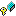

The fields of the virtual_parse_stack class are listed below. For a complete list of virtual_parse_stack class members, see the virtual_parse_stack Members topic.
| real_next | Top of stack indicator for where we leave off in the real stack. This is measured from top of stack, so 0 would indicate that no elements have been "moved" from the real to virtual stack. |
| real_stack | The real stack that we shadow. This is accessed when we move off the bottom of the virtual portion of the stack, but is always left unmodified. |
| vstack | The virtual top portion of the stack. This stack contains Integer objects with state numbers. This stack shadows the top portion of the real stack within the area that has been modified (via operations on the virtual stack). When this portion of the stack becomes empty we transfer elements from the underlying stack onto this stack. |
virtual_parse_stack Class | CUP.runtime Namespace | lr_parser